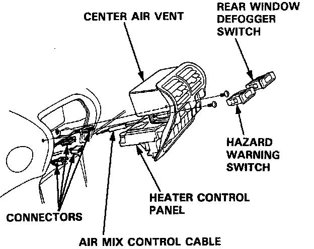
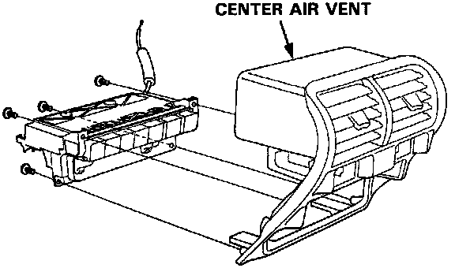

Replacement
Replacement1. Disconnect the air mix control cable from the heater unit.
2. Remove the rear window defogger switch and the hazard warning switch.

3. Remove the two self-tapping screws, then pull out the heater control panel and the center air vent. Disconnect the connectors, and remove the heater control panel and the center air vent.
NOTE: The locking tabs of the hazard warning switch and heater control panel connectors are on the bottom.

4. Remove the four self-tapping screws and the center air vent.
5. Install in the reverse order of removal, and adjust the air mix control cable at the heater unit. If necessary, adjust the heater valve cable.